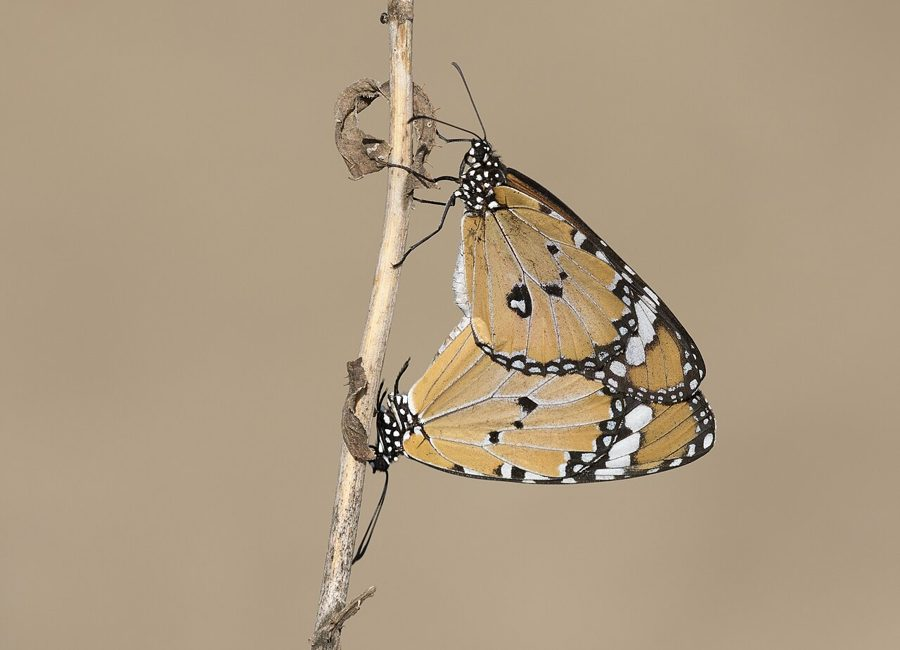

साधारण बाघ तितलीPlain Tiger
Danaus chrysippus · Nymphalidae · INS-0011

- Scientific name
- Danaus chrysippus (Linnaeus, 1758)
- Family
- Nymphalidae
- Hindi
- साधारण बाघ तितली
- Status here
- native
- IUCN
- not evaluated
When to look कब देखें
Present all year.
साधारण बाघ तितली / Plain Tiger
Danaus chrysippus (Linnaeus, 1758) — Nymphalidae
साधारण बाघ तितली — पूर्वी उत्तर प्रदेश के खेतों, बागों और सड़क किनारे झाड़ियों में पाई जाने वाली एक बहुत ही आम और सुंदर मध्यम आकार की नारंगी तितली। इसके पंखों का रंग चटक केसरी-नारंगी होता है, जिन पर काली सीमाएँ और सफ़ेद धब्बे होते हैं। इसके अगले पंखों के ऊपरी सिरों (apex) पर सफ़ेद चित्तियों का एक बड़ा काला पट्टा होता है। इसका कैटरपिलर ज़हरीले मदार (Calotropis) के पौधे की पत्तियां खाकर बड़ा होता है, जिससे यह तितली भी ज़हरीली हो जाती है और पक्षी इसे खाने से बचते हैं। इसके धीमे उड़ने का अंदाज़ और सुंदर रंग ग्रामीण परिवेश की जैव-विविधता का एक मुख्य हिस्सा हैं।
Quick Identification त्वरित पहचान
| Feature | Description |
|---|---|
| Form | Medium-sized butterfly with a slow, weak, and fluttering flight close to the ground |
| Coloration | Upper wings are a rich, tawny-orange; outer wing margins are bordered in black lined with white dots |
| Forewing Apex | The upper tip (apex) of the forewing is solid black, containing a diagonal band of 5–6 white spots |
| Underparts | Pale orange-yellow; hindwing with 3–4 small central black spots surrounding the white cell area |
| Larva | Distinctive caterpillar with black, white, and yellow crossbands, bearing three pairs of black tentacles |
Field tip: A medium orange-and-black butterfly with a slow, lazy flight. Easily recognized by the black forewing tips containing a diagonal row of white spots, and the absence of black lines along the veins (unlike the Striped Tiger). Commonly found resting on Calotropis leaves.
Morphology आकारिकी
Biometrics (typical measurements for adult populations in northern India):
| Measurement | Range |
|---|---|
| Body length | 25–35 mm |
| Wingspan | 70–80 mm |
| Forewing length | 33–38 mm |
Body: Slender, black, marked with small white spots on the head and thorax. The abdomen is dark brown or black.
Wings:
- Dorsal surface: The ground color of both wings is a bright tawny-orange. The outer margins are bordered in black, containing a double row of small white dots. The apex (outer tip) of the forewing is deep black, marked with a prominent, diagonal white band.
- Ventral surface: Similar to the upperparts but slightly paler orange-yellow. The hindwing contains 3–4 small black spots surrounding the central discal cell.
Sexual Dimorphism: Males are distinguished by a small, black, pouch-like sex brand (scent pouch) on the hindwing that releases courtship pheromones; females lack this brand.
Mimicry Protection: The bright orange-black coloration serves as an aposematic warning (warning coloration) to predators. Because the caterpillar feeds on toxic milkweeds, the adult stores cardenolide toxins (heart poisons) in its tissues, making it highly unpalatable to birds.
Ecological Role पारिस्थितिक भूमिका
Pollinator. Danaus chrysippus is an active pollinator. It visits a wide variety of wild herbs, agricultural crops, and garden flowers for nectar, facilitating seed set in agricultural ecosystems.
Mimicry model. Due to its chemical defense, it is the primary model for a famous Batesian mimicry complex. Several non-toxic butterfly species—most notably the female Danaid Eggfly (Hypolimnas misippus)—have evolved to mimic the Plain Tiger's coloration to deceive birds and avoid predation.
Larval herbivore. Caterpillars consume the leaves of Calotropis, helping regulate the density of this toxic weed along roadsides and fallow lands.
Life Cycle / Phenology जीवन चक्र
- Life cycle speed: Rapid, taking only 3 to 4 weeks from egg to adult during warm weather.
- Egg: The female lays single, bullet-shaped, white, ribbed eggs on the underside of Calotropis leaves.
- Larva: The caterpillar hatches in 3–5 days. It is marked with yellow, black, and white bands, and bears three pairs of long, flexible, black tentacles (used as sensory structures). It goes through 5 instars.
- Pupa: Forms a smooth, hanging chrysalis which can be either jade-green or pale pink, decorated with a line of tiny gold beads. The pupal stage lasts 7–10 days.
Host Plants or Prey आहार
Larval host plant:
- Giant Calotropis (Calotropis gigantea, FLR-0002) and Spindle Calotropis (Calotropis procera).
Adult nectar sources:
- Tulsi (Ocimum tenuiflorum, FLR-0008), Lantana (Lantana camara, FLR-0007), marigolds, Cosmos, and wild composites.
Predators / Natural Enemies शत्रु
- Spiders — Crab spiders and jumping spiders ambush adults on flowers.
- Praying Mantis (Hierodula membranacea, INS-0006) — Catches feeding butterflies on shrubs.
- Assassin Bugs — Prey on caterpillars on Calotropis stems.
- Parasitoid Wasps — Lay eggs inside the caterpillar, killing it before pupation.
Agricultural / Human Relevance कृषि प्रासंगिकता
Pollination services. Serves as a frequent visitor to mustard, pulses, and vegetable gardens in Basti, aiding in crop pollination.
Indicator species. The abundance of the Plain Tiger is a direct indicator of the health and density of Calotropis weed patches in the surrounding landscape.
Educational model. Because of its rapid, easily observed life cycle, it is commonly used in rural UP schools to teach children about insect metamorphosis and biological mimicry.
Expected Locally स्थानीय रूप से अपेक्षित
Not a field record. Written from published accounts for eastern Uttar Pradesh. No confirmed local sighting yet — if you have seen it, that is what the atlas needs.
अभी तक स्थानीय पुष्टि नहीं। यह विवरण प्रकाशित स्रोतों से है, किसी अवलोकन से नहीं।
One of the most common butterflies in Basti district, visible in all seasons except the coldest winter days. They are easily observed in schoolyards, home gardens, and fallow field margins where Calotropis gigantea (Madar) bushes are abundant. Their slow, bobbing flight makes them very easy to approach and photograph.
Distribution वितरण
Global range: Widespread across Africa, Southern Europe, Western Asia, the Indian subcontinent, Southeast Asia, and Australia.
In India: Distributed throughout the country, from the sea coast up to 2,500 metres in the hills.
In Uttar Pradesh: Abundant and resident in all rural, forest, and urban districts.
In Basti district / eastern UP: Ubiquitous across the plains, particularly common in open fallow lands.
Range notes: No significant range changes documented.
Research Questions शोध प्रश्न
Anyone can investigate these | कोई भी इन प्रश्नों की जाँच कर सकता है
- Do Plain Tiger caterpillars show a preference for feeding on young terminal leaves or mature lower leaves of Calotropis gigantea? / क्या साधारण बाघ तितली के कैटरपिलर मदार की नई कोमल पत्तियों को खाना पसंद करते हैं या पुरानी पत्तियों को? — Observe and record feeding sites of 15 caterpillars in a patch.
- How does the pupation period of the Plain Tiger change between the hot monsoon (August) and the dry winter (November) in Basti? / बस्ती में गर्म मानसून (अगस्त) और शुष्क सर्दियों (नवंबर) के बीच साधारण बाघ तितली के प्यूपा चरण की अवधि में क्या अंतर होता है? — Track pupation times in both seasons.
- What is the relative abundance of the mimic female Danaid Eggfly compared to the Plain Tiger in your garden? — Conduct weekly counts of both species.
- Which flowering weeds along Basti agricultural canals are most frequently visited by adult butterflies? — Document flower visits over 1 hour.
- Does the green or pink pupal color match the background color of the plant where the caterpillar pupates? — Record pupal colors and background materials (stems, leaves, dry walls).
Similar Species मिलती-जुलती प्रजातियाँ
| Species | How to tell apart | हिंदी |
|---|---|---|
| Striped Tiger (Danaus genutia) | Wings have prominent, thick black veins resembling a tiger's stripes; slightly larger | धारीदार बाघ तितली — नसों पर काली धारियां |
| Danaid Eggfly (Hypolimnas misippus / female) | Batesian mimic; lacks the tiny white dots along the black border on the hindwing margins; has a different body shape | अंड-चित्ती तितली (मादा) — आक्रामक अनुकरणकर्ता |
| Common Tiger (Danaus melanippus) | Has white streaks and patches on the hindwing; rare in northern India | कॉमन टाइगर — सफेद लकीरें |
Field rule: Medium-sized tawny-orange wings with black margins containing white dots, and black forewing tips containing a diagonal white band, but lacking black vein outlines, identify Danaus chrysippus.
Taxonomy & Classification वर्गीकरण
Original description. Carl Linnaeus described the Plain Tiger as Papilio chrysippus in 1758 in his work Systema Naturae, 10th edition (Vol. 1, p. 471). The type locality is Egypt. It was later designated as the type species of the genus Danaus by Latreille. Genus name Danaus is from the Greek myth. The specific epithet chrysippus is from the Greek mythological figure Chrysippus.
Subspecies. Globally, three subspecies are recognized, with the nominate form occurring in India:
- Danaus chrysippus chrysippus (Linnaeus, 1758) — UP subspecies; common throughout South Asia.
Family and order placement. Placed in the order Lepidoptera, family Nymphalidae (brush-footed butterflies), subfamily Danainae (milkweed butterflies).
Phylogenetic notes. Danaus chrysippus is closely related to the famous Monarch butterfly (Danaus plexippus). It represents an evolutionary lineage that has successfully colonized open, warm habitats across the Old World.
IUCN status rationale. Not formally assessed by the IUCN Red List (Not Evaluated). However, the species is highly abundant, secure, and under no immediate conservation threat.
Photo Gallery फोटो गैलरी
References संदर्भ
- Linnaeus, C. (1758). Systema Naturae per regna tria naturae. Editio Decima, Reformata. Laurentii Salvii, Holmiae, p. 471.
- Bingham, C.T. (1905). The Fauna of British India, including Ceylon and Burma. Butterflies. Vol. 1. Taylor & Francis, London.
- Kehimkar, I. (2008). The Book of Indian Butterflies. Bombay Natural History Society, Mumbai.
- Brower, L.P. (1984). Chemical defence in butterflies. Symposia of the Royal Entomological Society of London, 11, 109–134.
- Zoological Survey of India (ZSI) — Butterfly Fauna of Uttar Pradesh.
- GBIF Occurrence Data — Danaus chrysippus, Uttar Pradesh (2010–2025).
Source file: species/fauna/insects/plain_tiger.md